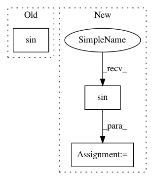

d857876a6a75f260a98cdf0877958ebafbcdaec5,neurodsp/sim/transients.py,,sim_asine_cycle,#,105
Before Change
// Make phase array for the cycle, and convert to signal
// Note: the ceil & floor are so the cycle has the right number of samples if n_decay is odd
cycle = np.sin(np.hstack([np.linspace(0, np.pi/2, int(np.ceil(n_rise/2)) + 1),
np.linspace(np.pi/2, -np.pi/2, n_decay + 1)[1:-1],
np.linspace(-np.pi/2, 0, int(np.floor(n_rise/2)) + 1)[:-1]]))
return cycle
After Change
np.linspace(-np.pi/2, 0, int(np.floor(n_rise/2)) + 1)[:-1]])
// Convert phase definition to signal
cycle = np.sin(phase)
return cycle
In pattern: SUPERPATTERN
Frequency: 3
Non-data size: 3
Instances
Project Name: neurodsp-tools/neurodsp
Commit Name: d857876a6a75f260a98cdf0877958ebafbcdaec5
Time: 2020-07-19
Author: tdonoghue@ucsd.edu
File Name: neurodsp/sim/transients.py
Class Name:
Method Name: sim_asine_cycle
Project Name: mil-tokyo/webdnn
Commit Name: 27f6a6d010343d17b9984dcba9cde649bd8d7b82
Time: 2018-01-25
Author: y.kikura@gmail.com
File Name: src/graph_transpiler/webdnn/graph/operators/sin.py
Class Name: Sin
Method Name: fold_constance
Project Name: neurodsp-tools/neurodsp
Commit Name: cb774bde4125a716a2578298a61a031ef5fcfd68
Time: 2019-04-07
Author: tdonoghue@ucsd.edu
File Name: neurodsp/sim/transients.py
Class Name:
Method Name: sim_osc_cycle